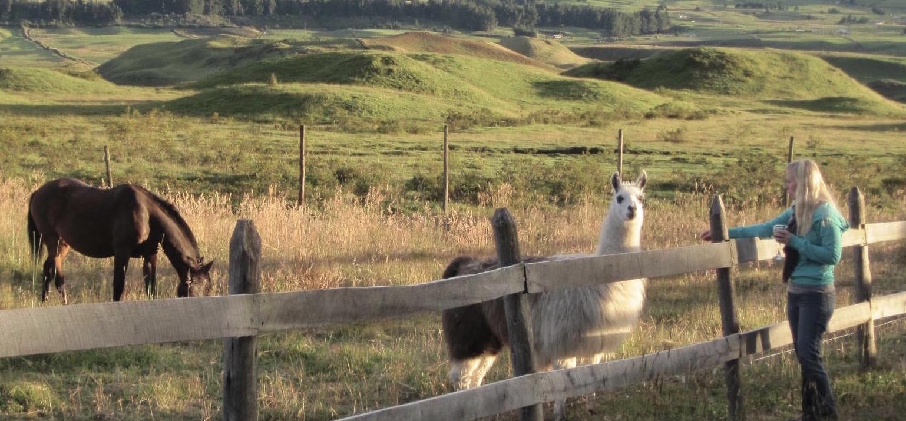

Last winter my husband and I were driving up to the mountains for a (kid free!!) day of skiing. I was rambling about how I missed teaching but wasn’t sure the classroom would be the right place for me once I decide to go back to work after two plus years of being a stay-at-home mom. I talked about all of the things I loved about teaching - creating the lessons, making the smart board presentations, designing and completing projects, using new technologies to teach online, and of course the kids. It became apparent that what I loved so much about teaching was the process. Learning and researching about a topic, planning how I would deliver that information to kids, creating and designing materials, and finally executing a project. I didn’t know it at the time, but it is a process that is very similar to the one that we go through as designers. After a suggestion to consider web design and extensive research I felt like there was something out there for me that that could really fit my lifestyle and tap into what I loved to do. I love creating. I love learning about new things and using that knowledge to execute a project. I enjoy problem solving and finding unique solutions to a problem. Mostly, I love to help others through my creations and knowledge. As a web designer, I am passionate about making information accessible and beautiful.
